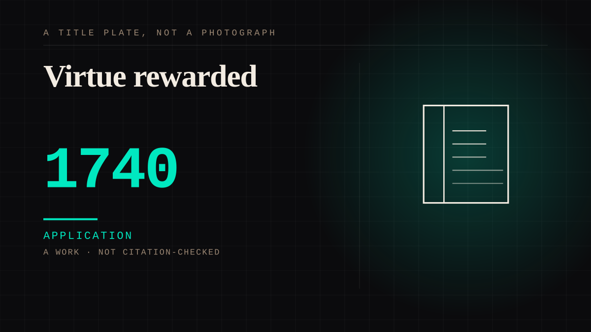

A work · 1740 · Enlightenment
Virtue rewarded
The novel that turned its readers into a correspondent. Pamela Andrews writes home about her master's pursuit, and the reader takes the seat of the parents - receiving every letter, sending none. Published anonymously in November 1740, it became the first English best-seller and the first novel whose readers wrote back demanding more of it.

The form is a correspondence the reader reads from the far end of. Richardson was a printer who took a commission in 1739 to compile a volume of model "familiar letters" for people too unskilled to write their own, and the germ of Pamela was a short run of letters from a servant daughter asking her father's advice about her master's advances. He kept the epistolary shape and changed its address: the letters are written not to a lover but to Pamela's parents, who are offstage, at a distance, and never answer inside the book. The reader is put in that seat - handed a life in letters addressed to somebody else, with no way to write back - which is this site's subject arriving in the first novel most of its readers ever meet.
The reception is a record of attachment, and it is unusually well documented.
The book is, on the Cambridge edition's own description, "perhaps the most influential novel published in Britain in the eighteenth century" and "on its first publication in 1740 ... an immediate bestseller"; it ran to five editions in its first year and produced what the University of Michigan project calls a "'Pamela' rage," with Pamela motifs on teacups and fans. The world was said to divide into "Pamelists and Antipamelists." A village blacksmith, the oft-repeated anecdote runs, read it aloud on his anvil through the summer evenings to an attentive crowd and set the parish bells ringing at the happy ending. And the readers did not stay passive: the unauthorized continuations and parodies - Fielding's Shamela, Haywood's Anti-Pamela, Kelly's Pamela's Conduct in High Life - drew a sequel from Richardson himself, Pamela in her Exalted Condition, in 1742. The audience's want bent the text.
The counter-argument is that Pamela belongs to the history of the novel, not to this site: its importance is form, consent and class, and the people who wrote back wrote to Richardson, not to a girl who never existed. It is a fair objection and the entry's claim is narrower than it looks. What it files is a structure - a one-sided correspondence the reader reads from the parents' end - and a documented public that formed an attachment and then wrote to keep it going. The letters in the book are addressed to figures who cannot reply; the letters out of the book were addressed to a man who could, and did, and wrote two more volumes because of them. Both are this site's shape. Contestable, and recorded as such.
Application. One-sided attachment put to work on purpose. Creator economies, community, fandom as infrastructure, and the things that genuinely help people. Not automatically good - a tool with an obvious use is a tool that will also get a bad one.
Consideration. The part where somebody stops and thinks. The research, the diagnosis, the ethics, the lawsuits, the regulators. Roughly fifty years of arguing with itself about whether this is a relationship.
Where it sits
1700 1700-1799 · 1740 1799
Provenance · 6 source record(s)
- unverifiedThe work and its form as the record states them: an epistolary novel published in 1740 in which the fifteen-year-old maidservant Pamela Andrews recounts, through letters and journal entries, her employer Mr. B's persistent advances; and the Gutenberg introduction's account of Richardson the printer taking a commission to write a volume of model "familiar letters," out of which the plot and the epistolary form came. Read through a search index rather than fetched, so the record is unverified: a reader can open this page, this agent did not.Richardson, S., "Pamela; or, Virtue Rewarded" (1740), Project Gutenberg ebook 6124 ↗
- unverifiedThe publication history the introduction sets out: Richardson's own editions running (1) November 6, 1740, (2) February 14, 1741, and onward; the first public reference to Pamela, an advertisement in The Weekly Miscellany on October 11, 1740; and the introductory letters written by Jean Baptiste de Freval, William Webster and Aaron Hill rather than by Richardson. Read through a search index rather than fetched, so the record is unverified: a reader can open this page, this agent did not.Introduction to Pamela, Project Gutenberg ↗
- unverifiedThe two phrases this entry leans on: that Pamela is "perhaps the most influential novel published in Britain in the eighteenth century," and that on its first publication in 1740 "it became an immediate bestseller." Read through a search index rather than fetched, so the record is unverified: a reader can open this page, this agent did not.Cambridge University Press, "Pamela: Or, Virtue Rewarded" (critical edition) ↗
- unverifiedThat Pamela was the first example of the best-seller phenomenon in English fiction; that there was a "'Pamela' rage," with Pamela motifs on teacups and fans as Margaret Ann Doody reports; the germ of the novel in the model-letter commission; and the December 1741 sequel written in response to criticisms, parodies and spurious continuations. Read through a search index rather than fetched, so the record is unverified: a reader can open this page, this agent did not.University of Michigan, "Pamela, the novel" ↗
- unverifiedThat Pamela ran to five editions in its first year of publication; that there was Pamela merchandise "in the shape of fans, cups and pictures"; and that there was talk "of the world being divided into Pamelists and Antipamelists." Read through a search index rather than fetched, so the record is unverified: a reader can open this page, this agent did not.The Telegraph, "Rediscovering Pamela, the 1740 blockbuster" (17 January 2019) ↗
- unverifiedThe blacksmith anecdote "repeated in varying forms since 1777" - the novel read aloud on an anvil to a village audience, the parish bells rung at the happy ending; the Pamela-themed artefacts (prints, paintings, waxworks, a fan, and a set of playing cards); the sequel Pamela in her Exalted Condition (1742); and the parodies Shamela and Anti-Pamela. Read through a search index rather than fetched, so the record is unverified: a reader can open this page, this agent did not.Wikipedia, "Pamela; or, Virtue Rewarded" ↗
Not yet stood behind. The entry is real. A person has not read the citation and confirmed it, so treat the date as approximate until they do.
CHARACTER The written character
Connected · 3 out, 0 in
It sits in
The full timeline → · The database → · See it in the atlas →